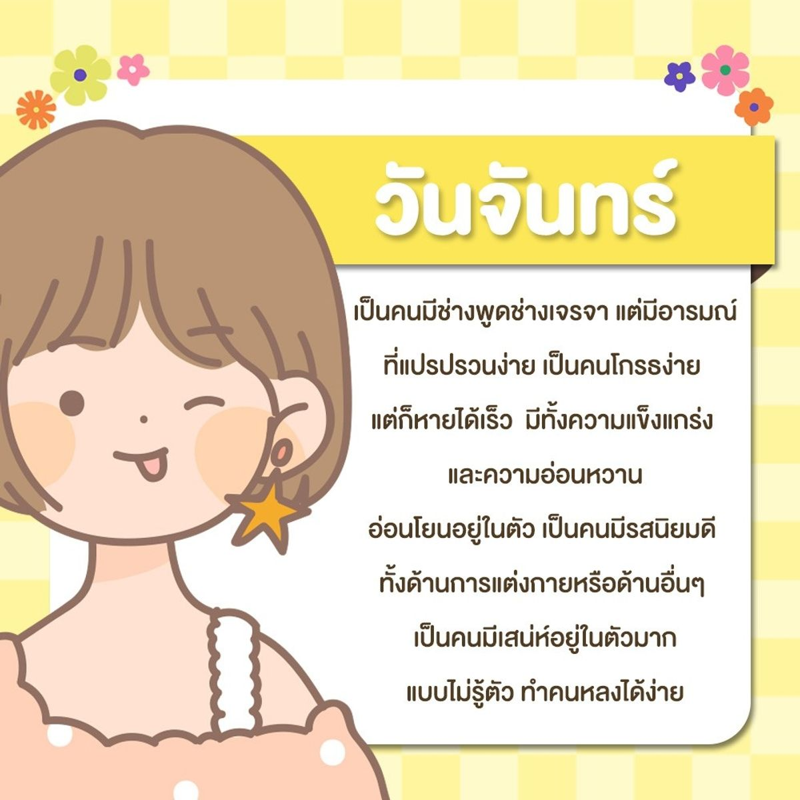

ทายนิสัยตามวันเกิด

Monday

💛 คนที่เกิดวันจันทร์
คุณเป็นคนมีเสน่ห์ ใจดีเอื้อเฟื้อเผื่อแผ่ และใส่ใจคนรอบข้างอย่างดี จับความรู้สึกของคนรอบตัวได้ไว ล้วงความลับเก่ง มีซิกเซ้นส์ลางสังหรณ์แม่นยำ ชอบธรรมชาติ ชอบความสงบ
โรแมนติกและรักอิสระ ไม่ชอบกฎเกณฑ์หรือข้อบังคับ แต่รู้จักการประณีประนอม ชอบให้คนเอาอกเอาใจโดยเฉพาะกับคนรู้ใจของคุณ
ถ้าคุณมีเพื่อนหรือคนสนิทที่เกิดวันจันทร์ต้องทำใจสักนิดกับความไม่แน่นอนของเขา โดยเฉพาะในเรื่องการนัดหมายบางทีอาจเปลี่ยนแปลงแบบทันทีทันใด คนที่เกิดวันนี้เวลาจะใจดีก็แสนจะดีแบบโอเวอร์ไปเลย
แต่หากทำให้โกรธหรือน้อยใจขึ้นมานอกจากจะแง่งอนเก่งแล้ว ยังพาลหาเรื่องได้ไม่หยุดหย่อนเช่นกัน ยิ่งถ้าโมโหถึงขีดสุดแล้วทั้งวีนทั้งเหวี่ยงได้ใจเหมือนระเบิดเวลาดีๆนี่เอง
💛 เคล็ดลับ
คนที่เกิดวันนี้หากเหนื่อยหนักกับปัญหาที่เข้ามา ให้หาบรรยากาศดีช่วงเวลาค่ำๆ หรือไปนั่งมองพระอาทิตย์ตกน้ำ มองท้องฟ้าเวลาค่ำคืน ก็จะทำให้คุณรู้สึกกลับมามีชีวิตชีวาสดใสร่าเริงเหมือเดิม
Tuesday
💖 วันอังคาร
คุณเป็นคนหนึ่งที่มักจะทำอะไรตามใจตัวเอง แต่มีความทรหดอดทนสูง คนที่มีเพื่อนเป็นคนเกิดวันอังคารถือว่าโชคดีเพราะคุณจะได้เพื่อนแท้ที่ยอมลำบากและไม่ทิ้งคุณ แถมบางครั้งยังออกหน้าปกป้องแทนเรา เขาเป็นคนที่ยอมเสียเปรียบคนอื่น โดยเฉพาะกับพึ่งพอใจ
เป็นคนหนึ่งที่มีพลังกายพลังใจเข็มแข็งไม่ย่อท้อต่อความล้มเหลว อาจเสียเฟลไปสักระยะหนึ่งแล้วก็ลุกขึ้นมาเริ่มต้นใหม่ได้ด้วยความมุ่งมั่น ในเรื่องความรักอาจจะผิดหวังบ่อยๆเพราะความเฉื่อยชาเรื่อยเปื่อยของคุณหรือการรักเพื่อนมากเกินไป ทำให้ต้องเปลี่ยนคู่บ่อยๆ
คนที่เกิดวันอังคารถ้าพบกับปัญหาชีวิตที่ทำให้รู้สึกเหนื่อยหรือท้อใจ รวมถึงเวลาที่ผิดหวังเสียความรู้สึกกับผู้คน
💖เคล็ดลับ
ให้ไปอยู่สถานที่ๆใกล้ๆน้ำที่มีการไหลผ่านเช่นแม่น้ำลำคลอง หรือ น้ำตก จะช่วยให้คุณผ่อนคลายและยังสร้างแรงบันดาลใจให้กับคุณด้วย
Wednesday
💚 วันพุธ (กลางวัน)
คุณเป็นนักพัฒนาตัวยง มีวิสัยทัศน์กว้างไกล ชอบการเรียนรู้ในสิ่งแปลกใหม่เสมอจึงไม่แปลกใจเลยว่าทำไมคุณเป็นคนหนึ่งที่ทันเหตุการณ์ต่างๆ
มีมนุษยสัมพันธ์และปรับตัวเข้ากับสิ่งแวดล้อมได้ดี ในเข้าถึงเทคโนโลยี่ต่างๆที่ทันสมัย เป็นนักวางแผนระดับเยี่ยม มีโปรแจกในหัวมายมาย
และไม่เหมาะที่จะทำงานในระบบเก่าๆเดิมๆซ้ำซาก ชอบความท้าทายชอบคิดโน้นคิดนี่อยู่ตลอดเวลา พูดคุยเก่งสนุกสนานเฮฮา
หว่านล้อมให้คนรอบข้างคล้อยตามได้ดี สิ่งหนึ่งที่คุณจะต้องปรับตัวเองสักนิดคือเมื่อคิดอะไรแล้วต้องลงมือทำในทันทีมิฉะนั้นคุณจะละทิ้งมันไปและไปเริ่มต้นในสิ่งใหม่ๆ
💚เคล็ดลับ
คนที่เกิดวันนี้เมื่อใดที่รู้สึกเซ็งๆเบื่อๆเฉื่อยชาเหมือนขาดพลังชีวิตก็ให้ ไปนั่งที่ริมทะเล มองท้องฟ้า รับสายลมแสงแดดอ่อนๆบ้าง ธรรมชาติของทะเล คลื่นลม
และแสงแดดจะเป็นสิ่งที่เติมเต็มทำให้คุณรู้สึกมั่นใจและกลับมามีชีวิตชีวาเหมือนเดิม
Wednesday
💚 วันพุธ (กลางคืน)
คุณเป็นอีกคนที่มีความเชี่ยวชาญเฉพาะด้านโดยเฉพาะเรื่องของการใช้เทคนิคหรือด้านเทคโนโลยี มีความสุดโต่ง กล้าคิดกล้าทำกล้าตัดสินใจ
ชอบทดลอง ลองผิดลองถูกด้วยตัวเอง ชอบการเริ่มต้นที่แปลกแหวกแนวใหม่ไม่เหมือนใคร จึงทำให้คนรอบข้างตามคุณไม่ทัน รักอิสระมาก ชอบเข้าสังคม และรู้จักการใช้ชั้นเชิงทันคน
เรียกว่ารู้เขารู้เราจึงทำให้คุณได้เปรียบคู่ต่อสู้เสมอ ถ้าคุณถูกใจสิ่งใดหรือถูกใจใครสักคนคุณพร้อมที่จะทุ่มเทให้กับสิ่งนั้นอย่างเต็มที่
และด้วยความรู้ความสามารถของคุณจะทำให้คุณประสบความสำเร็จในสิ่งที่ทำได้อย่างดี
💚เคล็ดลับ
หากเมื่อใดที่รู้สึกเหนื่อยและท้อถอยให้ลองไปพักผ่อนในที่บรรยากาศสงบๆ จะทำให้คุณผ่อนคลายได้รับพลังชีวิตมีไอเดียให้กับคุณ
Thursday
🧡 วันพฤหัสบดี
คุณเป็นคนที่มีมาดสุขุมเป็นผู้ใหญ่ จะทำอะไรแต่ละทีต้องไตร่ตรองวางแผน จริงๆแล้วคุณเป็นคนที่มีดีอยู่ในตัวมีความสามารถสูง เรียกว่าคมในฝัก
แต่กลับไม่ใช่คนที่จะนำเสนอหรือ Present ตัวเอง แต่เมื่อใดก็ตามที่มีคนเข้ามาขอคำปรึกษาคำแนะนำจากคุณ บุคคลนั้นแทบจะร้อง WOW กับความคิดเห็นของคุณเลยทีเดียว
มีธรรมชาติของการเป็นผู้ให้อย่างแท้จริง และมักไม่หวังผลตอบแทน ใจบุญสุนทานปฏิบัติธรรมได้ดี
เป็นคนที่มีความคิดจะสร้างฐานะความเป็นอยู่ให้มั่นคง จะน่าเบื่อสำหรับคนอยู่รอบข้างคุณเพราะคุณมักจะวางแผนชีวิตให้กับคนรอบข้างอยู่เสมอๆทำให้พวกเขารู้สึกขาดอิสระ
🧡เคล็ดลับ
ในยามที่รู้สึกไม่สบายอกสบายใจให้หาหนังสือธรรม หรือ การปฏิบัติธรรม การไปไหว้พระหรือการท่องเที่ยวเชิงอนุรักษ์
จะเป็นสิ่งหนึ่งที่ช่วยบำบัดความเศร้าความว้าเหว่ความไม่สบายอกสบายใจของคุณได้เป็นอย่างดี
Friday
💙 วันศุกร์
ศุกร์ สบายไฮโซ เป็นคำพูดติดปากของคนที่เกิดวันนี้ ชิลล์ชิลล์ ลั้นลา กับเพื่อนฝูงไปทั่ว ชอบการท่องเที่ยว มีศิลปะ และวาทศิลป์ที่ไม่เป็นรองใคร
และมักบริหารเสน่ห์โดยไม่รู้ตัว เวลาอยู่ในสังคนแวดล้อมไปด้วยเพื่อนฝูงคุณเป็นคนน่ารักมีเสน่ห์มากๆ ใครที่อยู่ใกล้กับคนที่เกิดวันศุกร์มักจะอารมณ์ดี หัวเราะได้บ่อยๆ
เป็นคนที่สร้างสีสันสร้างบรรยากาศให้มีความสุขได้ดี คุณอยู่ในสถานการณ์ที่มีความเคร่งเครียดคุณไม่รีรอที่จะดีดตัวเองให้พ้นจากสถานการณ์นั้นๆ
และถ้าคุณมีปัญหาชีวิตคุณมักจะเก็บความรู้สึก ไม่ค่อยแสดงความทุกข์ความโศกให้ใครได้รู้
💙เคล็ดลับ
การช้อปปิ้งหรือดูของสวยๆงามๆ หรือการไปพักผ่อนหย่อนใจในสถานที่ที่มีภูเขาและสายน้ำจะช่วยให้คุณผ่อนคลายและกลับมามีชีวิตชีวาเหมือนเดิม
Saturday
💜 วันเสาร์
นิสัยของคนที่เกิดวันนี้จะเป็นคนที่ทุ่มเทหากจะเรียนรู้อะไรต้องรู้ถึงแก่นเรียกว่ารู้จริง แต่ถ้าจะให้เริ่มต้นสิ่งใหม่ๆที่ไม่คุ้นเคยต้องทำใจกับเขาหน่อย
เพราะพวกเขาจะขาดความมั่นใจในตัวเอง หรือบางทีคิดไว้แต่ไม่ลงมือทำหรืออาจต้องรอให้คนมาจุดประกายมาคอยเป็นกำลังให้จึงจะลงมือทำ
ข้อดีของคุณคือเมื่อตัดสินใจลงมือทำอะไรแล้วคุณจะมุ่งมั่น ทุ่มเท อดทน เพื่อให้สิ่งนั้นประสบความสำเร็จ รู้จักเก็บออมใช้สอยจึงมีโอกาสที่จะร่ำรวยได้
แต่หากจะพูดถึงเรื่องของความรักต้องระวังในเรื่องของอารมณ์และความหึงหวงของคุณให้มาก เพราะมันจะเป็นฉนวนให้เกิดปัญหาระหว่างกันได้
คนที่เกิดวันนี้มักจะแค้นฝังหุ่นเมื่อมีเรื่องหรือปัญหาอะไรก็ตามมักจะไม่ปล่อยวาง
💜เคล็ดลับ
เมื่อใดที่รู้สึกเหน็ดเหนื่อยหรือไม่สบายใจให้หากิจกรรมเช่นออกกำลังกายเข้าฟิตเนส หรือเดินทางไกลไปยังสถานที่ต่างๆสักระยะเพื่อเป็นการผ่อนคลายและชาร์จแบตให้กับตัวเองบ้างก็จะดีไม่น้อยเลย
Sunday
🔴 วันอาทิตย์
คุณเป็นคนที่มีความคิดความอ่านเฉลียวฉลาด หัวก้าวหน้าทันสมัย มีความมั่นอกมั่นใจในสิ่งที่จะทำ เรียกว่าหากคิดจะทำอะไรต้องทำให้สำเร็จอยู่มือ รักหน้าตาของตัวเอง
ไม่ชอบถูกกล่าวถึงหรือถูกพาดพิง การจัดการผู้อื่นให้อยู่ใต้อานัติของตนเอง เป็นสิ่งถนัด โดยเนื้อแท้ของคุณเป็นคนใจกว้างใจดีทีเดียว แถมยังรักเพื่อนรักบริวาร แต่อารมณ์จะค่อนข้างโกรธง่าย
หายไว แล้วจบ ไม่เอามาคิดอีกให้เปลืองสมอง ชอบให้คนรอบข้างยอมรับ
แถมยังมีความเจ้าชู้อยู่ในตัวบ้างเป็นบางครั้งบางคราว สิ่งที่คุณยอมรับไม่ได้คือการถูกขัดคอหรือถูกตำหนิต่อหน้าผู้คน
คนที่เกิดวันอาทิตย์หากมีปัญหาและรู้สึกถึงการขาดพลังและต้องการเติมเต็มให้ชีวิต
🔴 เคล็ดลับ
การเดินทางท่องเที่ยว ไปยังสถานที่เป็นป่า หรือมีต้นไม้เยอะๆ สวนสาธารณะหรือ อุทยาน การเดินทางไปต่างประเทศจะช่วยซึมซับพลังงานด้านลบให้หมดไปและยังทำให้คุณรู้สึกแจ่มใสพร้อมสู้พร้อมลุยต่อไป